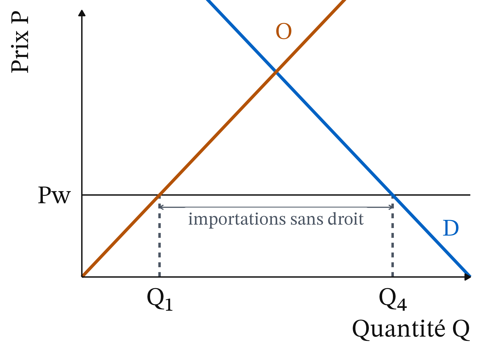
À quoi servent les droits de douane ?
CM 9 · Partie II · La monnaie, l’État, le monde
ATER en économie, Université Clermont Auvergne
Le fait de départ : le « Jour de la libération » (02/04/2025)
- Le 2 avril 2025, que l’administration américaine baptise « Jour de la libération », les États-Unis relèvent leurs droits de douane sur presque tous leurs partenaires.
- Droit de douane moyen américain : 4,9 % en janvier 2025, 24,2 % le 2 avril, encore environ 15 % en février 2026.
- Recettes douanières brutes : 202,4 Md$ sur l’exercice 2025, 317,8 Md$ sur l’exercice 2026, soit +57 %.
Question de la séance : à quoi servent les droits de douane ?
Sources : Guimbard, CEPII, The Conversation, 22/07/2026 ; Trésor des États-Unis, Monthly Treasury Statement, téléchargé le 21/10/2026, calcul de l’auteur.
Objectifs affichés, coûts réels : deux questions et deux outils
- Le droit est versé à la frontière par l’importateur : qui le paie vraiment, l’exportateur étranger, l’importateur, le consommateur ?
- L’échange enrichit les deux partenaires : pourquoi taxer ses propres achats ?
- Objectifs affichés : recettes, industrie naissante ou en difficulté, rapport de force, sécurité économique, carbone importé (MACF).
- Outils : l’avantage comparatif (d’où viennent les gains) ; l’analyse en surplus (qui paie, qui gagne, ce qui est perdu).
Rappel : cinq notions nécessaires pour la séance
- Coût d’opportunité : ce à quoi on renonce pour obtenir quelque chose.
- Surplus : du consommateur, prix qu’il était prêt à payer moins prix payé ; du producteur, prix reçu moins Cm. Des aires sur le graphique.
- Perte sèche : surplus perdu par rapport à la meilleure quantité.
- Incidence : celui qui verse la taxe n’est pas forcément celui qui la supporte.
- Solde commercial : exportations moins importations.
Ricardo (1817) : l’échange enrichit même le pays le moins productif
1821 · Thomas Phillips, domaine public, Wikimedia Commons
David Ricardo (1817), On the Principles of Political Economy and Taxation, chap. 7 · école classique. Un pays gagne à se spécialiser dans les biens où son désavantage est le plus faible, même s’il est moins productif que son partenaire pour tous les biens.
Ce qui compte n’est pas la productivité comparée des pays, mais le coût d’un bien mesuré en l’autre bien, à l’intérieur de chaque pays.
Avantage absolu et avantage comparatif : définitions
Définition 1 (Avantage absolu, avantage comparatif) Un pays a un avantage absolu dans un bien s’il le produit avec moins de travail que son partenaire. Il a un avantage comparatif dans un bien si son coût d’opportunité y est plus faible : il renonce à moins d’autres biens pour en produire une unité.
- Un pays peut n’avoir aucun avantage absolu.
- Il a toujours un avantage comparatif dès que ses coûts d’opportunité diffèrent de ceux de son partenaire.
L’avocate et son assistant : les écarts de coûts d’opportunité
- Une avocate tape plus vite que son assistant : elle a l’avantage absolu dans la frappe.
- Elle a pourtant intérêt à lui confier la frappe : chaque heure qu’elle y passerait est une heure de plaidoirie perdue, beaucoup plus coûteuse.
- Le gain de l’échange vient des écarts de coûts d’opportunité, pas des écarts de productivité.
Exemple chiffré : deux pays, deux biens, un avantage comparatif
| Blé (1 tonne) | Vêtements (1 lot) | Heures disponibles | |
|---|---|---|---|
| Pays A | 2 h | 4 h | 120 h |
| Pays B | 12 h | 6 h | 240 h |
- Avantage absolu : A produit les deux biens avec moins d’heures que B (2 h contre 12 h, 4 h contre 6 h).
- Coûts d’opportunité : un lot coûte 4 ÷ 2 = 2 t de blé dans A, 6 ÷ 12 = 0,5 t dans B.
- B a un avantage comparatif dans les vêtements, A dans le blé.
Gains de l’échange (1/3) : frontières de production de A et de B
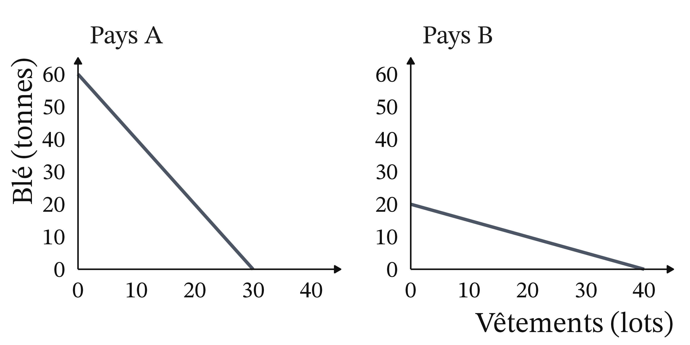
Chaque droite est la frontière de production : tout ce qu’un pays peut produire seul avec ses heures. A : 60 t de blé ou 30 lots ; B : 20 t ou 40 lots.
Gains de l’échange (2/3) : en autarcie, 40 tonnes et 35 lots
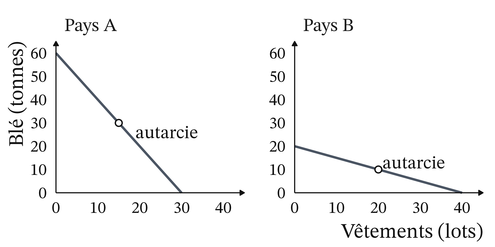
Chaque pays consacre la moitié de ses heures à chaque bien. A : 30 t et 15 lots ; B : 10 t et 20 lots. À deux : 40 t et 35 lots.
Spécialisation : plus des deux biens avec les mêmes heures
- Spécialisation : A ne fait que du blé, 120 ÷ 2 = 60 t ; B ne fait que des vêtements, 240 ÷ 6 = 40 lots.
- Comparaison : à deux, 60 t et 40 lots, contre 40 t et 35 lots en autarcie.
- Lecture : il y a plus des deux biens, avec les mêmes heures de travail.
Gains de l’échange (3/3) : chaque pays consomme au-delà de sa frontière
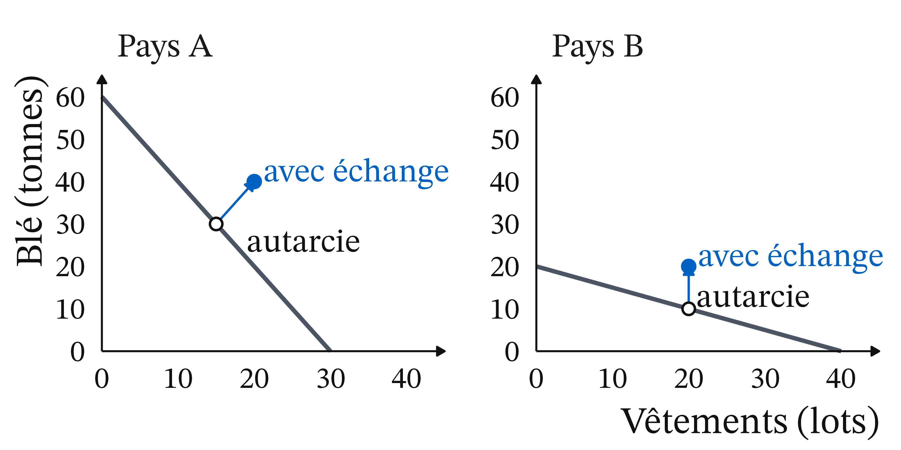
A vend 20 t de blé à B contre 20 lots. A consomme 40 t et 20 lots (au lieu de 30 et 15) ; B, 20 t et 20 lots (au lieu de 10 et 20).
Le prix d’échange se situe entre les deux coûts d’opportunité
- A obtient un lot pour 1 t de blé, alors qu’il lui en coûterait 2 t de le produire.
- B obtient 1 t de blé pour un lot, alors qu’il lui en coûterait 2 lots de la produire.
- Le prix d’échange, un lot pour une tonne, tombe entre les deux coûts d’opportunité (2 t dans A, 0,5 t dans B) : c’est la condition pour que chacun gagne.
Point d’attention : moins productif partout, et pourtant gagnant
« Un pays moins productif en tout n’a rien à vendre, il sera envahi. » C’est confondre avantage absolu et avantage comparatif.
- Le pays B de l’exemple est moins productif pour les deux biens, et il gagne pourtant à l’échange.
- Sa faible productivité se paie dans ses salaires, plus bas, pas dans l’absence d’échange.
Heckscher (1919) et Ohlin (1933) : gagnants et perdants dans chaque pays
Eli Heckscher · photographe inconnu, domaine public, Wikimedia Commons
1950 · photographe inconnu, CC BY-SA 4.0, redimensionné, Wikimedia Commons
Eli Heckscher (1919) et Bertil Ohlin (1933) · école néoclassique. Un pays exporte les biens qui utilisent beaucoup le facteur dont il est bien doté (travail qualifié, terres, capital) et importe ceux qui utilisent le facteur qui lui manque.
Stolper et Samuelson (1941) : l’ouverture enrichit les détenteurs du facteur abondant et appauvrit ceux du facteur rare.
Le pays gagne à l’ouverture, pas tous ses habitants
- Ricardo : le pays gagne à l’échange.
- Heckscher et Ohlin : tous ses habitants ne gagnent pas.
- Dans un pays riche en travail qualifié, l’ouverture profite aux ingénieurs et pèse sur les ouvriers, d’abord dans les industries concurrencées.
- Un droit de douane, de même, déplace des gains et des pertes entre des groupes.
Droit de douane : une taxe sur un bien importé
Définition 2 (Droit de douane) Un droit de douane (ou tarif douanier) est une taxe prélevée sur un bien importé, au passage de la frontière. Il est ad valorem quand il représente un pourcentage de la valeur du bien (15 %), spécifique quand c’est un montant par unité, noté t (10 € par tee-shirt).
Le droit NPF (« nation la plus favorisée ») est le droit de base qu’un membre de l’Organisation mondiale du commerce (OMC) applique à tous ses partenaires, sauf accord particulier.
Petit pays : le prix mondial Pw est donné
Définition 3 (Petit pays, prix mondial) Un pays est petit sur un marché quand ses achats sont trop faibles pour modifier le prix mondial, noté Pw. Il prend ce prix comme donné : sans droit de douane, le prix intérieur est égal à Pw ; avec un droit t, il devient Pw + t.
- Un grand pays achète assez pour faire bouger le prix que fixent les exportateurs.
- « Qui paie ? » est une question d’incidence : elle ne se règle pas en regardant qui remplit la déclaration en douane.
Droit de douane (1/4) : sans droit, le prix intérieur est Pw
- Le pays achète au prix mondial Pw, inférieur au prix où O coupe D.
- Au prix Pw, on produit Q₁ et on consomme Q₄.
- On importe la différence, de Q₁ à Q₄.
Droit de douane (2/4) : le prix intérieur monte à Pw + t

- Le pays est petit : les exportateurs vendent toujours à Pw ; le prix intérieur monte de tout le droit.
- Production : de Q₁ à Q₂ ; consommation : de Q₄ à Q₃.
- Les importations se réduisent.
Droit de douane (3/4) : les producteurs gagnent a, l’État encaisse c
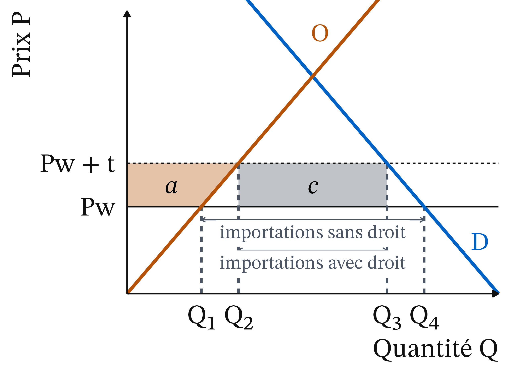
- a : les producteurs du pays vendent plus cher et plus ; leur surplus augmente.
- c : l’État perçoit t sur chaque bien importé, de Q₂ à Q₃.
- a et c sont des transferts venus des consommateurs.
Droit de douane (4/4) : b + d, la perte sèche
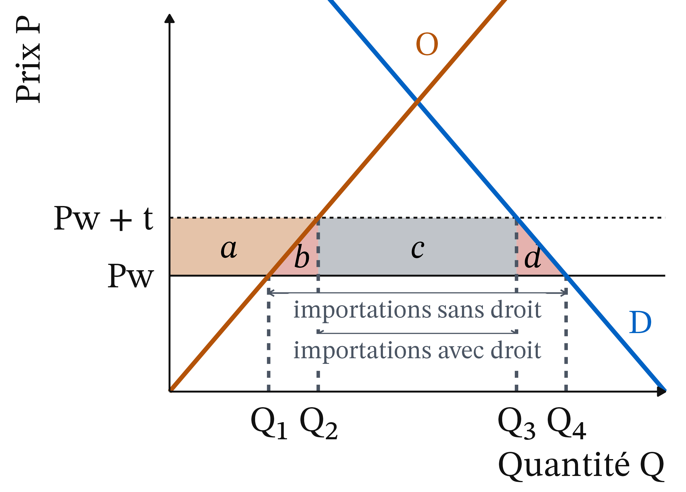
- Consommateurs : − (a + b + c + d).
- Producteurs : + a ; État : + c.
- b + d, en rouge, n’est récupéré par personne : c’est la perte sèche.
Exemple chiffré : un droit de 10 € sur les tee-shirts
Marché fictif : Q en millions de tee-shirts par an, P en euros.
- Demande intérieure D : Q = 100 − P ; offre intérieure O : Q = P.
- Prix mondial : Pw = 20 €. Droit : t = 10 € par tee-shirt, soit 50 % du prix mondial.
- Sans droit, au prix de 20 € : demande 80, production 20, importations 60.
- Avec droit, au prix de 30 € : demande 70, production 30, importations 40.
Exemple chiffré (1/3) : les importations passent de 60 à 40 millions
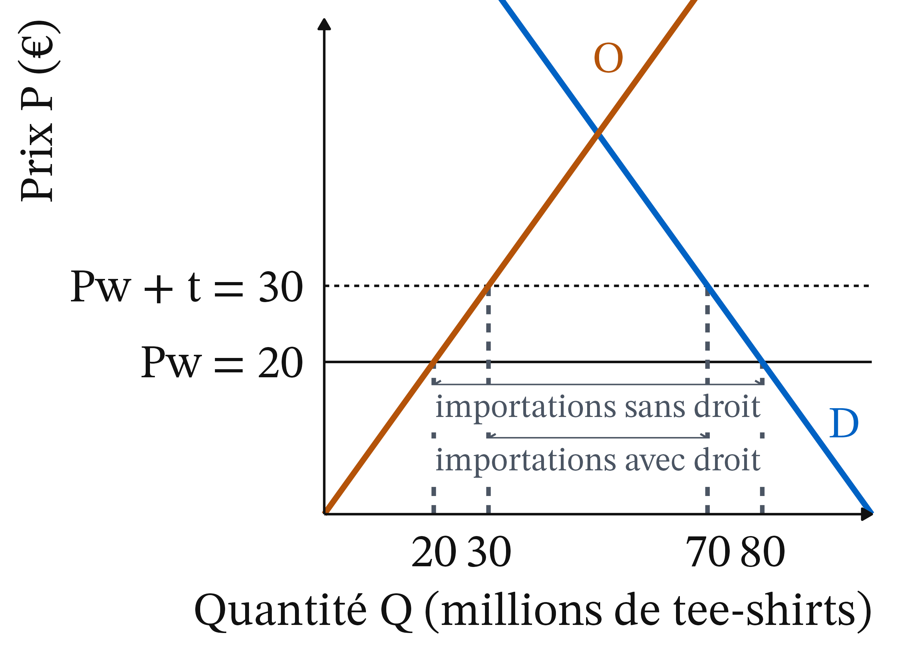
- Production : de 20 à 30 millions.
- Consommation : de 80 à 70 millions.
- Importations : de 60 à 40 millions.
- Le prix intérieur monte de 20 € à 30 €.
Exemple chiffré (2/3) : producteurs + 250 M€, État + 400 M€
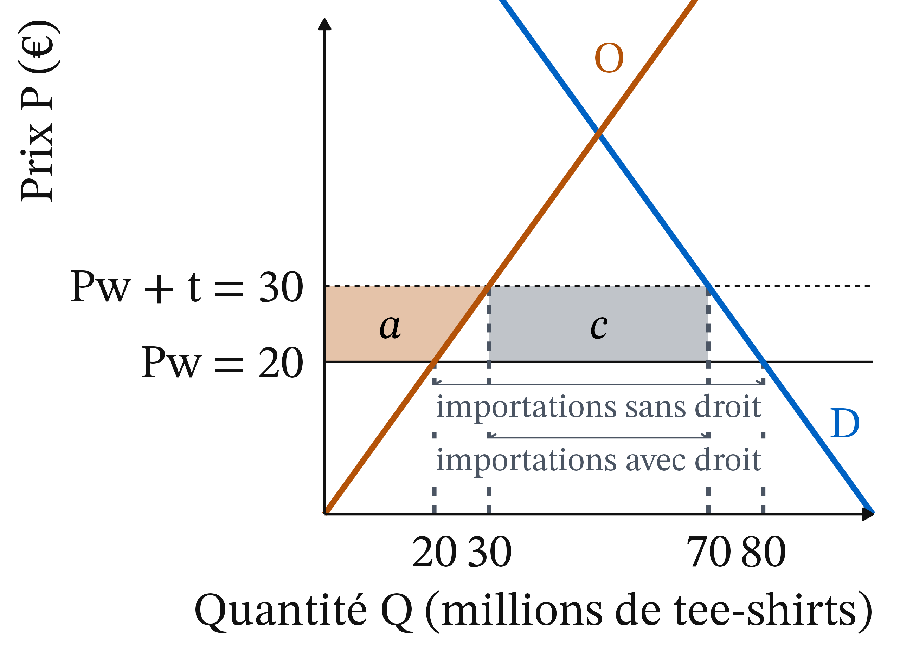
- Producteurs : (20 + 30) ÷ 2 × 10 = 250 M€ par an (a).
- État : 10 € × 40 millions = 400 M€ (c).
- a et c sont des transferts : les consommateurs les paient.
Exemple chiffré (3/3) : consommateurs − 750 M€, perte sèche 100 M€
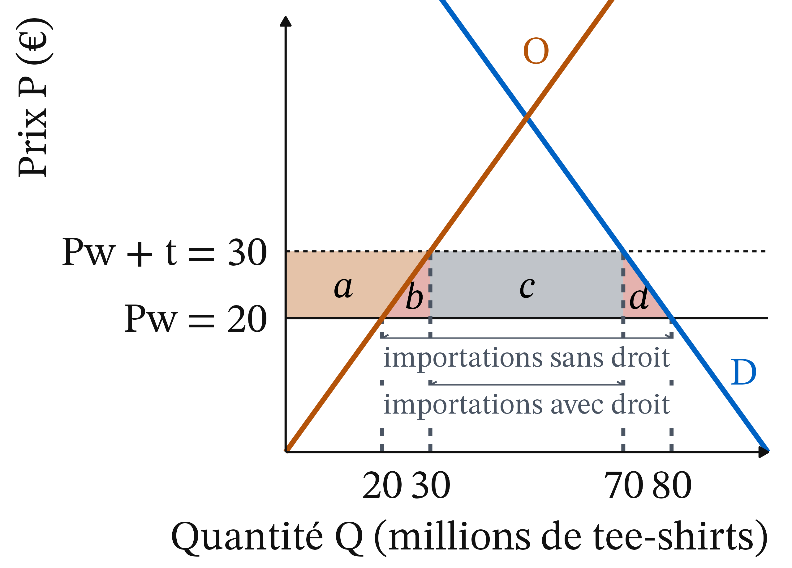
- Consommateurs : (80 + 70) ÷ 2 × 10 = 750 M€ par an (a + b + c + d).
- Bilan : 750 − 250 − 400 = 100 M€ par an perdus par le pays : la perte sèche.
Perte sèche : produire trop cher, acheter moins
- Aire b : (30 − 20) × 10 ÷ 2 = 50 M€. Le pays produit 10 millions de tee-shirts qui lui coûtent entre 20 et 30 €, alors qu’il pourrait les importer à 20 €.
- Aire d : (80 − 70) × 10 ÷ 2 = 50 M€. 10 millions d’achats n’ont plus lieu, alors que les acheteurs étaient prêts à payer plus que le prix mondial.
- Lecture : le droit transfère 650 M€ et en détruit 100, six fois moins.
Point d’attention : dans un petit pays, l’étranger ne paie pas le droit
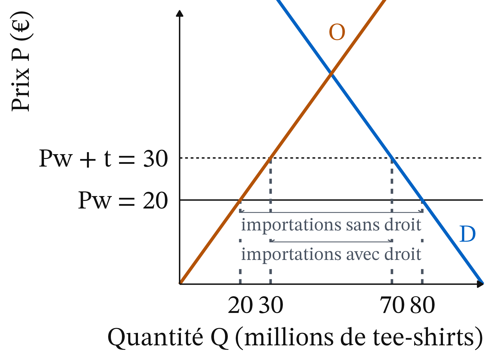
« Le droit est payé par l’étranger, puisque c’est son produit qui est taxé. »
. . .
L’exportateur reçoit toujours 20 € : il vend moins, au même prix. Les acheteurs du pays paient les 10 €. Regarder qui voit son prix changer.
Grand pays : la part payée par l’étranger, exemple chiffré
Même droit de 10 € par tee-shirt, dans un grand pays : s’il achète moins, des exportateurs étrangers baissent leur prix hors droit pour garder leurs ventes, ici de 20 € à 19 €.
- Prix intérieur : 19 + 10 = 29 € : les acheteurs paient 9 € de plus.
- Exportateurs : ils reçoivent 1 € de moins, donc paient 1 € du droit.
- Incidence : baisse du prix hors droit ÷ droit = 1 ÷ 10 = 10 % payés par l’étranger, 90 % dans le pays.
Grand pays : 42 M€ payés par l’étranger, 81 M€ de perte sèche
- À 29 €, on demande 71 millions, on en produit 29 : on importe 42 millions.
- L’étranger paie 1 € × 42 millions = 42 M€ par an.
- Perte sèche : b + d = 9 × 9 ÷ 2 + 9 × 9 ÷ 2 = 81 M€ par an.
- Le pays reste perdant : une baisse de 1 € du prix étranger ne suffit pas.
Un grand pays gagne à un droit modéré si l’étranger paie plus que la perte sèche, sans représailles.
Droits américains 2025-2026 : des taux qui changent vite
| Date | Mesure |
|---|---|
| 21/08/2025 | Accord UE-États-Unis : droit américain plancher de 15 %, NPF compris |
| 20/02/2026 | La Cour suprême annule les droits fondés sur une loi d’urgence (IEEPA) |
| 24/02 → 24/07/2026 | Surtaxe temporaire de 10 % (section 122) |
| Depuis le 24/07/2026 | UE : 10 % (section 301) ; automobiles européennes : 15 % (section 232) |
Le droit sert aussi de menace : il a aidé à conclure plusieurs accords, dont celui avec l’UE ; son coût est le risque de représailles.
Sources : Maison-Blanche, 21/08/2025 ; Deysine, 23/02/2026 ; DG Trésor, 06/08/2026 ; Guimbard, 22/07/2026.
En 2025, près de 90 % des droits payés aux États-Unis
- Repère 2018 : les prix hors droit des exportateurs n’avaient pas baissé ; le droit était passé en entier dans les prix américains (Amiti, Redding et Weinstein, 2019 ; Fajgelbaum et al., 2020).
- Part payée par les exportateurs étrangers : 6 % (janvier-août 2025), 8 % (septembre-octobre), 14 % (novembre).
- Part payée aux États-Unis : 94 %, 92 %, puis 86 %.
Source : Amiti, Flanagan, Heise et Weinstein, Liberty Street Economics, 12/02/2026.
Prix américains : importations hors droit stables, biens de consommation en hausse
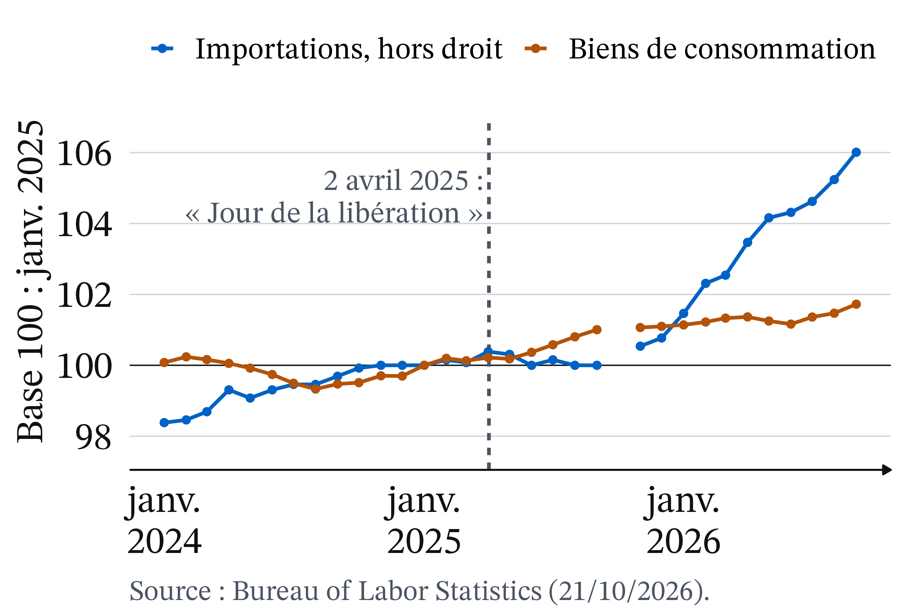
- Janvier à septembre 2025 : prix hors droit des importations inchangés (indice 129,8 aux deux dates).
- Prix à la consommation des biens : +1,0 %, contre −0,6 % sur la même période de 2024.
Du droit aux prix à la consommation : un passage en un an
- Prix à l’importation : ils réagissent presque un pour un dès le premier mois.
- Prix des biens de consommation : un point de droit en plus les fait monter d’environ 0,25 % au bout d’un an, quand l’effet est complet.
- Pourquoi moins que le droit : les biens importés ne sont qu’une partie de la consommation ; un tee-shirt en magasin contient aussi du transport, des loyers et des salaires du pays.
- Février 2026 : les droits ajoutent 2,9 points à l’inflation des biens.
Source : Amiti, Heise et Weinstein, Liberty Street Economics, 06/10/2026.
Droits de 2018 : transferts importants, perte nette faible

- Perte des acheteurs de biens importés : 51 Md$, 0,27 % du PIB américain.
- Après recette douanière (c) et gain des producteurs (a) : perte nette de 7,2 Md$, 0,04 % du PIB.
Recettes douanières américaines : quadruplées, puis amputées par les remboursements
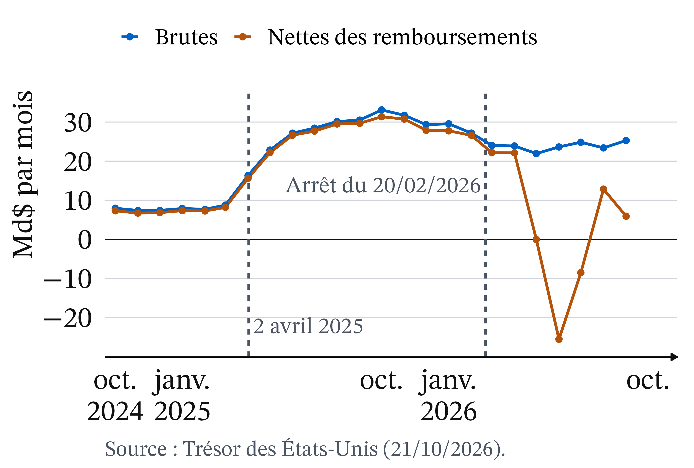
- Recettes brutes multipliées par quatre entre l’automne 2024 et l’automne 2025.
- Après l’arrêt du 20/02/2026, les remboursements rendent les recettes nettes négatives de mai à juillet 2026.
Remboursements : l’argent rendu va aux importateurs
- Écart entre recettes brutes et nettes, surtout des remboursements : 7,5 Md$ sur l’exercice 2025, 145 Md$ sur l’exercice 2026.
- La Cour du commerce international a ordonné de rembourser les importateurs, qui ont versé les droits.
- Pour beaucoup, les entreprises qui ont répercuté la hausse sur leurs clients n’ont droit à aucun remboursement.
Qui a supporté le droit : question positive. Qui doit être remboursé : question normative, que tranchent le droit et les tribunaux.
Effets de répartition par revenu : un droit pèse sur les ménages modestes
- Les droits relevés en 2018 et en 2019 devaient coûter 831 $ par an à un ménage américain typique, hors représailles (Amiti, Redding et Weinstein, Liberty Street Economics, 23/05/2019).
- Comme une taxe sur les biens de consommation, un tel droit pèse plus, en part du revenu, sur les ménages qui dépensent tout leur revenu.
- C’est un raisonnement : les sources de la séance ne chiffrent pas l’écart par niveau de revenu.
Chaîne de valeur : un bien franchit plusieurs frontières
Port de Los Angeles. Photo : Downtowngal, CC BY-SA 4.0, Wikimedia Commons.
Définition 4 (Chaîne de valeur) Une chaîne de valeur est la suite des étapes de production d’un bien, de la matière première au produit fini. Quand ces étapes sont réparties entre plusieurs pays, un bien franchit plusieurs frontières avant d’être vendu.
Droit sur l’acier : les aciéries gagnent a, leurs clients paient
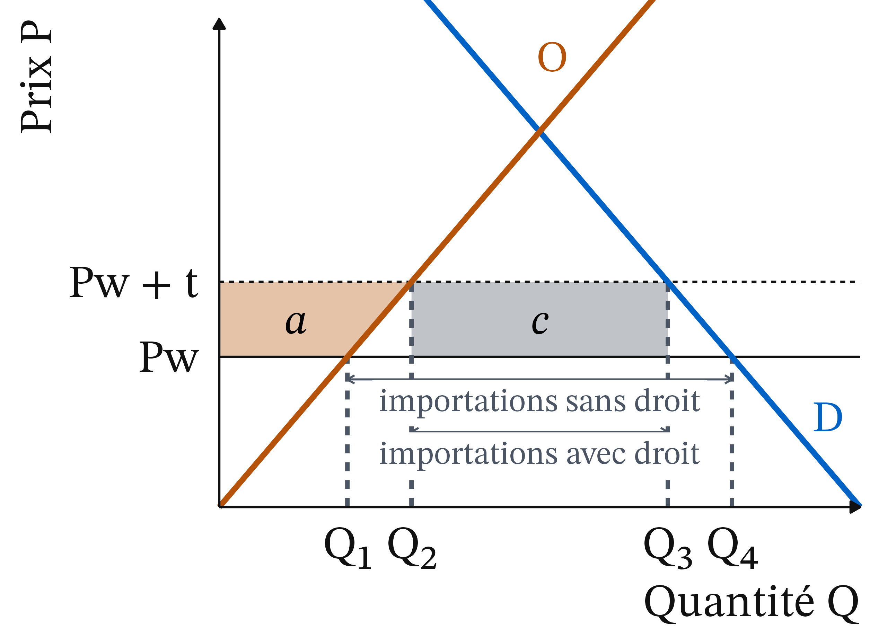
- Le droit t renchérit l’acier importé.
- Les aciéries du pays relèvent leur prix : elles gagnent a.
- Automobile, machines : le Cm monte.
- Leurs acheteurs paient plus.
- Elles vendent moins, y compris à l’exportation.
Effets de répartition par territoire : des pertes concentrées
- Les gains de l’ouverture sont diffus ; ses pertes sont concentrées.
- 1990-2007 : les zones industrielles américaines les plus exposées aux importations chinoises ont connu plus de chômage, des salaires plus bas, plus d’aides sociales ; environ un quart du recul de l’emploi industriel (Autor, Dorn et Hanson, 2013).
- 2018 : les représailles ont surtout visé l’agriculture (Fajgelbaum et al., 2020).
Effets de répartition entre générations et à l’étranger
- Par génération : l’argument de l’industrie naissante est un pari. Les consommateurs d’aujourd’hui paient plus cher pour qu’une industrie devienne compétitive demain.
- Ce pari n’est gagnant que si ce gain existe et si la protection est retirée ensuite.
- À l’étranger : les exportateurs qui perdent leurs ventes perdent leur surplus. En 2025, l’UE a vendu pour 554,7 Md€ de biens aux États-Unis.
Source : Eurostat, ext_lt_maineu, téléchargé le 21/10/2026.
MACF : un droit de douane pour le climat
- Fuite de carbone : l’UE fait payer le carbone à ses industriels ; produire hors de l’UE, puis y exporter, devient tentant.
- Le mécanisme d’ajustement carbone aux frontières (MACF) fait payer aux importations le carbone émis pour les produire, au prix des quotas européens.
- Régime définitif depuis le 1er janvier 2026 : ciment, fer et acier, aluminium, engrais, électricité, hydrogène. Payant en 2027.
Sources : Commission européenne, page CBAM, consultée le 21/10/2026 ; Mayer Brown, 17/10/2025.
MACF : un même prix du carbone, des perdants éloignés
- Ce droit vise moins à protéger une industrie qu’à faire payer le même prix au carbone produit dans l’UE et au carbone importé.
- Ses perdants sont souvent loin : le Mozambique tire près d’un cinquième de ses exportations totales de l’aluminium vendu à l’UE.
- Deux économistes de l’Agence française de développement proposent d’en exempter les pays les moins avancés et de les aider autrement.
Source : Godin et Riccioppo Magacho, The Conversation, 10/01/2023.
Controverse : protéger ses producteurs, ce qui est et ce qui devrait être
Analyse positive (ce qui est : mécanismes et effets, vérifiables)
- Qui paie : les droits américains de 2018 et de 2025 ont été payés à 86 % ou plus par les importateurs et les consommateurs américains.
- Combien : un droit transfère du revenu et en détruit une partie, d’ampleur variable selon les estimations.
Analyse normative (ce qui devrait être : dépend de jugements de valeur)
- Quel poids donner au pouvoir d’achat, aux emplois et aux territoires, au rapport de force, à la dépendance, au climat ?
Analyse positive : un déficit bilatéral n’est pas une perte
| Milliards d’euros | 2023 | 2024 | 2025 |
|---|---|---|---|
| Exportations de biens de l’UE vers les États-Unis | 505,9 | 535,6 | 554,7 |
| Importations de biens de l’UE depuis les États-Unis | 347,8 | 337,4 | 356,7 |
| Solde, vu de l’UE | +158,1 | +198,2 | +198,0 |
Dans l’exemple de Ricardo, le gain vient de ce qu’on importe à bon prix, pas d’un solde positif. Un solde bilatéral ignore les autres pays et les services.
Source : Eurostat, ext_lt_maineu, mis à jour le 16/10/2026, téléchargé le 21/10/2026 ; solde calculé par l’auteur.
Libre-échange et protectionnisme éducateur : deux écoles
- Libre-échange (Ricardo, puis les néoclassiques) : l’échange enrichit les pays ; mieux vaut compenser les perdants (aides, formation, politiques régionales) que taxer tout le monde.
- Protectionnisme éducateur (Friedrich List, XIXe siècle) : protéger temporairement les « industries naissantes », jusqu’à ce qu’elles soient compétitives.
- Limites, selon les critiques : compensation partielle en pratique (Autor et al., 2013) ; représailles, secteurs choisis par les mieux organisés, rentes protégées.
Le désaccord porte sur la valeur d’un emploi, pas sur le mécanisme
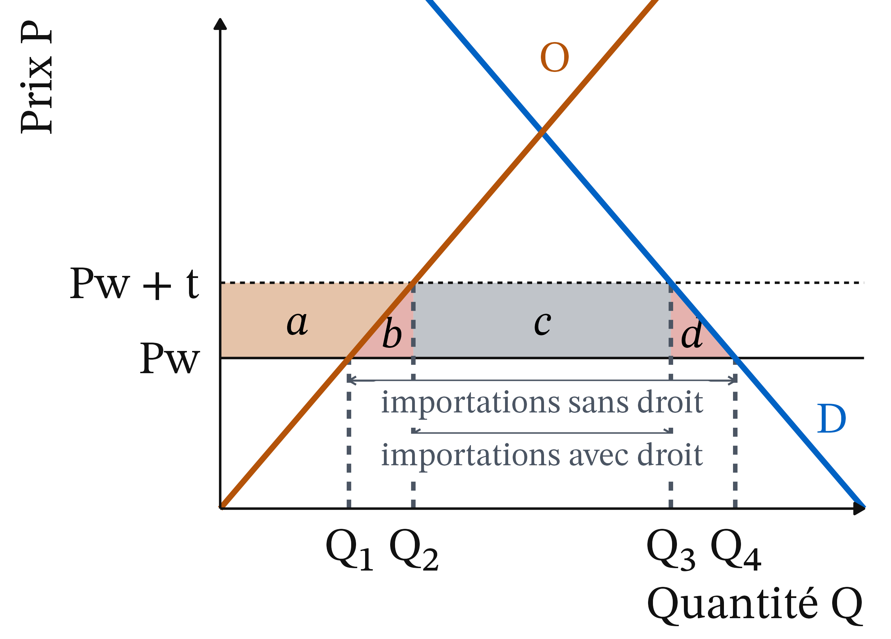
- Le mécanisme du graphique est largement admis.
- Le désaccord porte sur ce que vaut un emploi industriel préservé, comparé au surcoût payé par des millions d’acheteurs.
Et le droit ? Le Congrès aux États-Unis, l’Union en Europe
Aux États-Unis, la Constitution donne au Congrès, et à lui seul, le pouvoir de lever l’impôt et les droits de douane. Le 20/02/2026 (Learning Resources, Inc. v. Trump), la Cour suprême juge, par six voix contre trois, que la loi d’urgence (IEEPA) ne permet pas au président de créer des droits sans le Congrès.
Dans l’UE, la politique commerciale est une compétence exclusive de l’Union (TFUE, art. 3 et 207) : la Commission négocie pour les 27.
À retenir
- Coûts d’opportunité différents : l’échange enrichit, même un pays moins productif partout (Ricardo).
- L’ouverture enrichit le pays, pas tous ses habitants : le facteur rare y perd (Stolper-Samuelson).
- Petit pays : prix de Pw à Pw + t ; le droit transfère du revenu et en détruit une partie.
- Part payée par l’étranger : baisse de son prix hors droit ÷ droit, de 0 à 14 % en 2018 et 2025.
- L’objectif vaut-il son coût : une question normative.
Plan de dissertation : ce que dit l’outil, ce qu’il ne tranche pas
Sujet : à quoi servent les droits de douane ?
I. Ce que dit l’outil (positif)
- A. L’échange enrichit les pays par l’avantage comparatif, sans enrichir tous leurs habitants.
- B. Un droit transfère du revenu vers les producteurs et l’État, en détruit une partie, et se paie surtout dans le pays.
II. Ce qu’il ne tranche pas (normatif)
- A. Recettes, protection, rapport de force, sécurité, climat : un objectif vaut-il son coût ?
- B. Libre-échange et protectionnisme éducateur : le poids donné aux perdants.
CM 9 · Douane